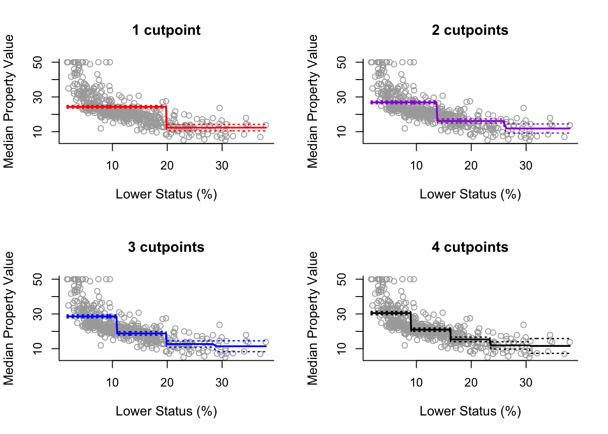
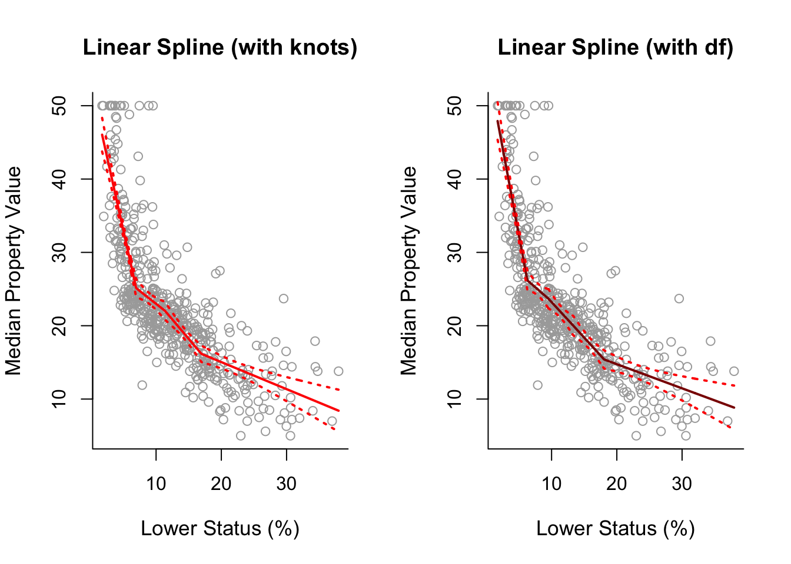
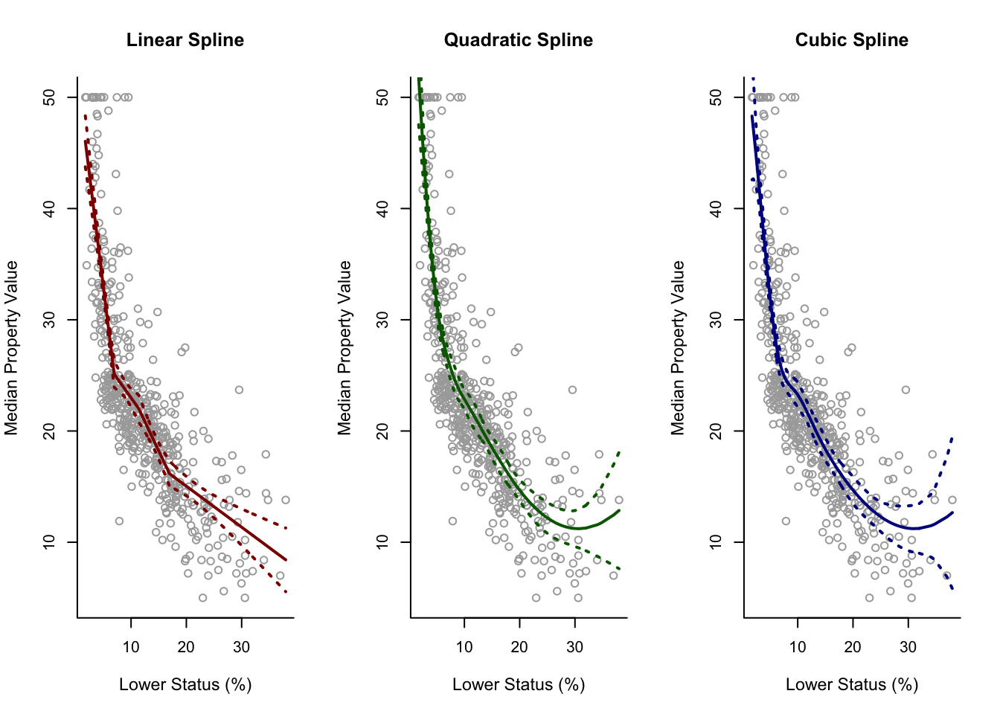
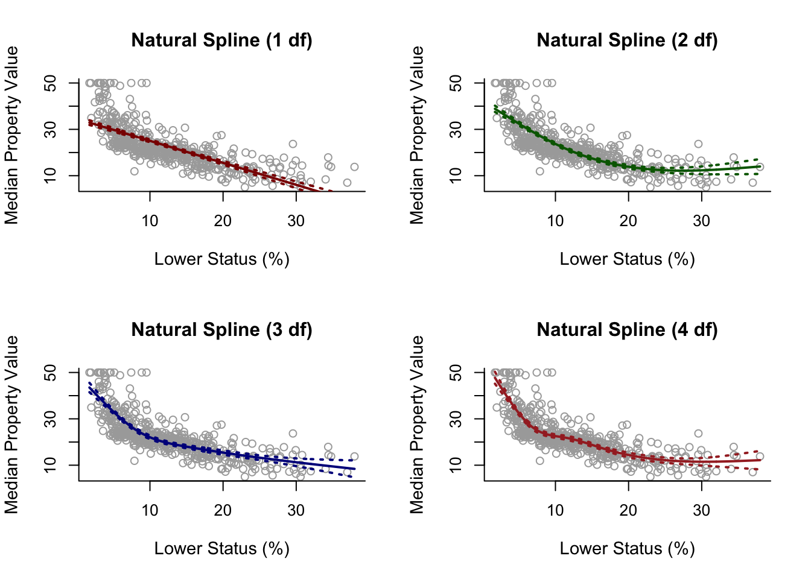
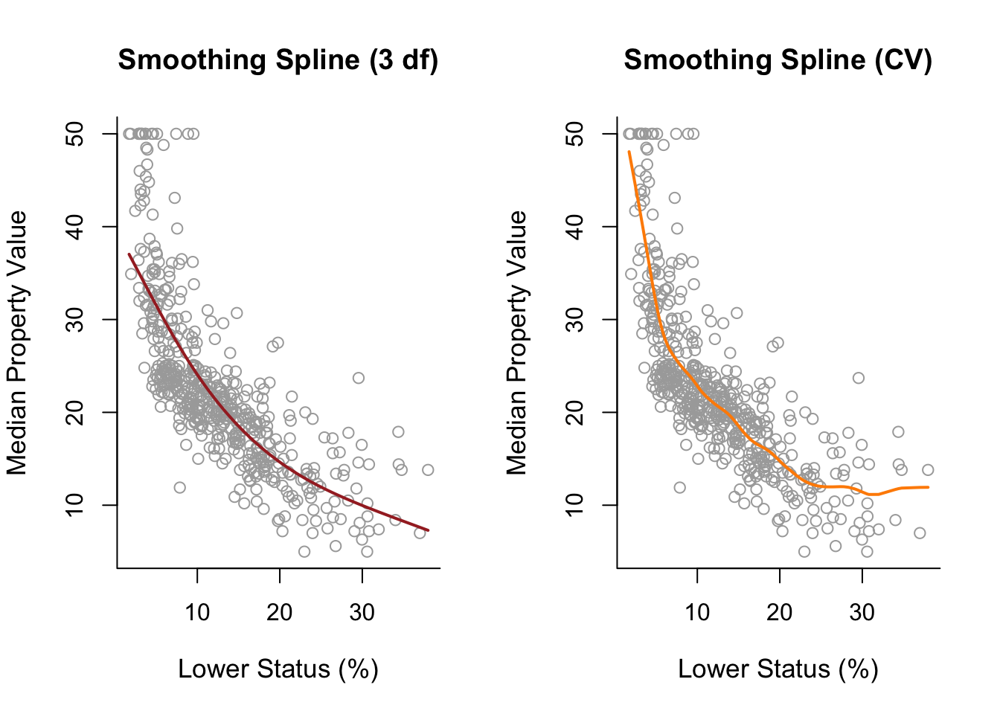
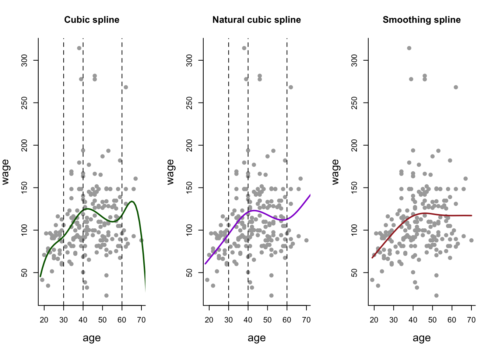
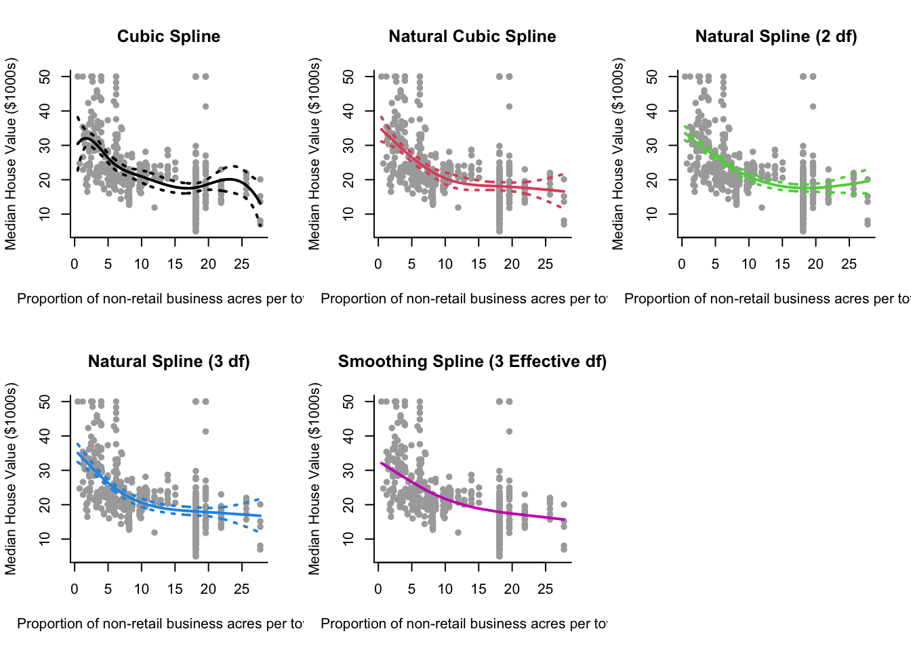

Chapter 7 Splines
See final subsection on comparing splines for best way to plot this kind of data.
7.1 Step Functions
With Boston data, following on from polynomial regression section.
To use a step function model, use cut(x, n) function which automatically assigns break points. Note that n specifies the number of intervals, not the number of break points (cuts).
step3 = lm(y ~ cut(x, 3))Then following generic analysis for plotting:
pred3 = predict(step3, newdata = list(x = sort(x)), se = TRUE)
se.bands3 = cbind(pred3$fit + 2*pred3$se.fit, pred3$fit-2*pred3$se.fit)
plot(x, y, cex.lab = 1.1, col="darkgrey", xlab = x.lab, ylab = y.lab,
main = "2 cutpoints", bty = 'l')
lines(sort(x), pred3$fit, lwd = 2, col = "darkviolet")
matlines(sort(x), se.bands3, lwd = 1.4, col = "darkviolet", lty = 3)We plot below as if we did it for 2,3,4 and 5 intervals:

7.2 Regression Splines
Using Boston data again with x and y defined as variables for convenience with labels y.lab and x.lab done as well.
For regression splines, we use the splines package.
library(splines)Cuts for regression splines can be specified or done automatically. One option is to specify them using quartiles: cuts = summary(x)[c(2, 3, 5)].
Since we use data points \(x\) values as points to plot the splines, we must also sort them: sort.x = sort(x).
Regression Spline Model and SE Bands
We use bs() function from splines and can either specify the knots or specify the degrees of freedom:
spline1 = lm(y ~ bs(x, degree = 1, knots = cuts))
pred1 = predict(spline1, newdata = list(x = sort.x), se = TRUE)
se.bands1 = cbind(pred1$fit + 2 * pred1$se.fit, pred1$fit - 2 * pred1$se.fit)spline1df = lm(y ~ bs(x, degree = 1, df = 5))
pred1df = predict(spline1df, newdata = list(x = sort.x), se = TRUE)
se.bands1df = cbind( pred1df$fit + 2 * pred1df$se.fit,
pred1df$fit - 2 * pred1df$se.fit )Plot
par(mfrow = c(1, 2))
plot(x, y, cex.lab = 1.1, col="darkgrey", xlab = x.lab, ylab = y.lab,
main = "Linear Spline (with knots)", bty = 'l')
lines(sort.x, pred1$fit, lwd = 2, col = "red")
matlines(sort.x, se.bands1, lwd = 2, col = "red", lty = 3)
plot(x, y, cex.lab = 1.1, col="darkgrey", xlab = x.lab, ylab = y.lab,
main = "Linear Spline (with df)", bty = 'l')
lines(sort.x, pred1df$fit, lwd = 2, col = "darkred")
matlines(sort.x, se.bands1df, lwd = 2, col = "red", lty = 3)
For Higher Degrees
spline2 = lm(y ~ bs(x, degree = 2, df = 6))
pred2 = predict(spline2, newdata = list(x = sort.x), se = TRUE)
se.bands2 = cbind(pred2$fit + 2 * pred2$se.fit, pred2$fit - 2 * pred2$se.fit)
spline3 = lm(y ~ bs(x, degree = 3, df = 7))
pred3 = predict(spline3, newdata = list(x = sort.x), se = TRUE)
se.bands3 = cbind(pred3$fit + 2 * pred3$se.fit, pred3$fit - 2 * pred3$se.fit)
par(mfrow = c(1,3))
plot(x, y, cex.lab = 1.1, col="darkgrey", xlab = x.lab, ylab = y.lab,
main = "Linear Spline", bty = 'l')
lines(sort.x, pred1$fit, lwd = 2, col = "darkred")
matlines(sort.x, se.bands1, lwd = 2, col = "darkred", lty = 3)
plot(x, y, cex.lab = 1.1, col="darkgrey", xlab = x.lab, ylab = y.lab,
main = "Quadratic Spline", bty = 'l')
lines(sort.x, pred2$fit, lwd = 2, col = "darkgreen")
matlines(sort.x, se.bands2, lwd = 2, col = "darkgreen", lty = 3)
plot(x, y, cex.lab = 1.1, col="darkgrey", xlab = x.lab, ylab = y.lab,
main = "Cubic Spline", bty = 'l')
lines(sort.x, pred3$fit, lwd = 2, col = "darkblue")
matlines(sort.x, se.bands3, lwd = 2, col = "darkblue", lty = 3)
7.3 Natural Splines
Adds the extra constraints of continuity in first \(d-1\) derivatives. We use the ns() function. Again, we use library("splines") package.
spline.ns3 = lm(y ~ ns(x, df = 3))
pred.ns3 = predict(spline.ns3, newdata = list(x = sort.x), se = TRUE)
se.bands.ns3 = cbind(pred.ns3$fit + 2 * pred.ns3$se.fit,
pred.ns3$fit - 2 * pred.ns3$se.fit)Plotting
Assuming we have made similarly spline.ns1, spline.ns2, spline.ns3 and spline.ns4.
par(mfrow = c(2, 2))
plot(x, y, cex.lab = 1.1, col="darkgrey", xlab = x.lab, ylab = y.lab,
main = "Natural Spline (1 df)", bty = 'l')
lines(sort.x, pred.ns1$fit, lwd = 2, col = "darkred")
matlines(sort.x, se.bands.ns1, lwd = 2, col = "darkred", lty = 3)
plot(x, y, cex.lab = 1.1, col="darkgrey", xlab = x.lab, ylab = y.lab,
main = "Natural Spline (2 df)", bty = 'l')
lines(sort.x, pred.ns2$fit, lwd = 2, col = "darkgreen")
matlines(sort.x, se.bands.ns2, lwd = 2, col = "darkgreen", lty = 3)
plot(x, y, cex.lab = 1.1, col="darkgrey", xlab = x.lab, ylab = y.lab,
main = "Natural Spline (3 df)", bty = 'l')
lines(sort.x, pred.ns3$fit, lwd = 2, col = "darkblue")
matlines(sort.x, se.bands.ns3, lwd = 2, col = "darkblue", lty = 3)
plot(x, y, cex.lab = 1.1, col="darkgrey", xlab = x.lab, ylab = y.lab,
main = "Natural Spline (4 df)", bty = 'l')
lines(sort.x, pred.ns4$fit, lwd = 2, col = "brown")
matlines(sort.x, se.bands.ns4, lwd = 2, col = "brown", lty = 3)
Practical 4 Example (Using Knots)
ns = lm(y ~ ns(x, knots = cuts))
pred.ns = predict(ns, newdata = list(x = grid), se = TRUE)
se.bands.ns = cbind(pred.ns$fit + 2 * pred.ns$se.fit,
pred.ns$fit - 2 * pred.ns$se.fit)7.4 Smoothing Splines
For smoothing splines we use smoothing.splines() instead of lm(). Use the df parameter to specify effective degrees of freedom or the cv = TRUE parameter to use (ordinary leave-one-out) cross validation instead (to choose a \(\lambda\)). Can also directly specify lambda or spar (a smoothing parameter).
Notes: Specifying \(\lambda\) with effective degrees of freedom (df = ...) still uses cross-validation.
smooth1 = smooth.spline(x, y, df = 3) #choose lambda using effective degrees of freedom
smooth2 = smooth.spline(x, y, cv = TRUE) #choose lambda via cross validation
par(mfrow = c(1,2))
plot(x, y, cex.lab = 1.1, col="darkgrey", xlab = x.lab, ylab = y.lab,
main = "Smoothing Spline (3 df)", bty = 'l')
lines(smooth1, lwd = 2, col = "brown")
plot(x, y, cex.lab = 1.1, col="darkgrey", xlab = x.lab, ylab = y.lab,
main = "Smoothing Spline (CV)", bty = 'l')
lines(smooth2, lwd = 2, col = "darkorange")
7.5 Comparing Splines
Below compares different splines on wage data. We load packages library("ISLR") for data and library("splines") to use regression and natural splines.
Setup for plotting curves
agelims = range(Wage$age)
age.grid = seq(from=agelims[1], to=agelims[2])Taking a sample of data of size \(n\)
set.seed(1)
# Number of data points - change this to investigate small (50),
# medium (200) and large (1000) samples.
n <- 200
ind = sample(1:3000, n)
Wage1 = Wage[ind,] # Label subset of data as Wage1.Cubic Spline
fitbs = lm(wage~bs(age, degree = 3, knots = c(30,40,60)), data = Wage1)
predbs = predict(fitbs, newdata = list(age = age.grid), se = T)Natural Spline
fitns = lm(wage~ns(age, knots = c(30,40,60)), data = Wage1)
predns = predict(fitns, newdata = list(age = age.grid), se = T)## Warning in if (se.fit) list(fit = predictor, se.fit = se, df = df,
## residual.scale = sqrt(res.var)) else predictor: the condition has length > 1 and
## only the first element will be usedSmoothing Spline
fitss = smooth.spline(Wage1$age, Wage1$wage, cv = TRUE) Generate the Plots
par(mfrow=c(1,3))
# Cubic Spline
plot(Wage1$age, Wage1$wage, col = "darkgray", pch = 19,
main = 'Cubic spline', bty = 'l',
xlab = 'age', ylab = 'wage', cex.lab = 1.4)
lines(age.grid, predbs$fit, lwd = 2, col = 'darkgreen')
abline(v = c(30,40,60), lty = 'dashed')
# Natural Spline
plot(Wage1$age, Wage1$wage, col = "darkgray", pch = 19,
main = 'Natural cubic spline', bty = 'l',
xlab = 'age', ylab = 'wage', cex.lab = 1.4)
lines(age.grid, predns$fit, lwd = 2, col = 'darkviolet')
abline(v = c(30,40,60), lty = 'dashed')
# Smoothing Spline
plot(Wage1$age, Wage1$wage, col = "darkgray", pch = 19,
main = 'Smoothing spline', bty = 'l',
xlab = 'age', ylab = 'wage', cex.lab = 1.4)
lines(fitss, lwd = 2, col = 'brown')
Practical 4 Example
Modelling medv ~ indus using natural and smoothing splines.
Basic Setup:
library("MASS")
library(splines)
data("Boston")
y = Boston$medv
x = Boston$indus
y.lab = "Median House Value ($1000s)"
x.lab = "Proportion of non-retail business acres per town"cuts <- summary(x)[c(2,3,5)] #For knots
grid = seq(min(x), max(x), length.out = 500) #For plotting curvesCubic Spline:
bs = lm(y ~ bs(x, knots = cuts))
pred.bs = predict(bs, newdata = list(x = grid), se = TRUE)
se.bands.bs = cbind(pred.bs$fit + 2 * pred.bs$se.fit,
pred.bs$fit - 2 * pred.bs$se.fit)Natural Cubic Spline (Knots):
nsk = lm(y ~ ns(x, knots = cuts))
pred.nsk = predict(nsk, newdata = list(x = grid), se = TRUE)
se.bands.nsk = cbind(pred.nsk$fit + 2 * pred.nsk$se.fit,
pred.nsk$fit - 2 * pred.nsk$se.fit)Natural Cubic Spline (2 df):
ns2 = lm(y ~ ns(x, df = 2))
pred.ns2 = predict(ns2, newdata = list(x = grid), se = TRUE)
se.bands.ns2 = cbind(pred.ns2$fit + 2 * pred.ns2$se.fit,
pred.ns2$fit - 2 * pred.ns2$se.fit)Natural Cubic Spline (3 df):
ns3 = lm(y ~ ns(x, df = 3))
pred.ns3 = predict(ns3, newdata = list(x = grid), se = TRUE)
se.bands.ns3 = cbind(pred.ns3$fit + 2 * pred.ns3$se.fit,
pred.ns3$fit - 2 * pred.ns3$se.fit)Smoothing Spline (3 effective df):
smooth = smooth.spline(x, y, df = 3)Plot:
par(mfrow = c(2,3))
plot(x, y, col="darkgrey", xlab = x.lab, ylab = y.lab, main = "Cubic Spline", bty = 'l', pch = 16)
lines(grid, pred.bs$fit, lwd = 2, col = 1)
matlines(grid, se.bands.bs, lwd = 2, col = 1, lty = 3)
plot(x, y, col="darkgrey", xlab = x.lab, ylab = y.lab, main = "Natural Cubic Spline", bty = 'l', pch = 16)
lines(grid, pred.nsk$fit, lwd = 2, col = 2)
matlines(grid, se.bands.nsk, lwd = 2, col = 2, lty = 3)
plot(x, y, col="darkgrey", xlab = x.lab, ylab = y.lab, main = "Natural Spline (2 df)", bty = 'l', pch = 16)
lines(grid, pred.ns2$fit, lwd = 2, col = 3)
matlines(grid, se.bands.ns2, lwd = 2, col = 3, lty = 3)
plot(x, y, col="darkgrey", xlab = x.lab, ylab = y.lab, main = "Natural Spline (3 df)", bty = 'l', pch = 16)
lines(grid, pred.ns3$fit, lwd = 2, col = 4)
matlines(grid, se.bands.ns3, lwd = 2, col = 4, lty = 3)
plot(x, y, col="darkgrey", xlab = x.lab, ylab = y.lab, main = "Smoothing Spline (3 Effective df)", bty = 'l', pch = 16)
lines(smooth, lwd = 2, col = 6)